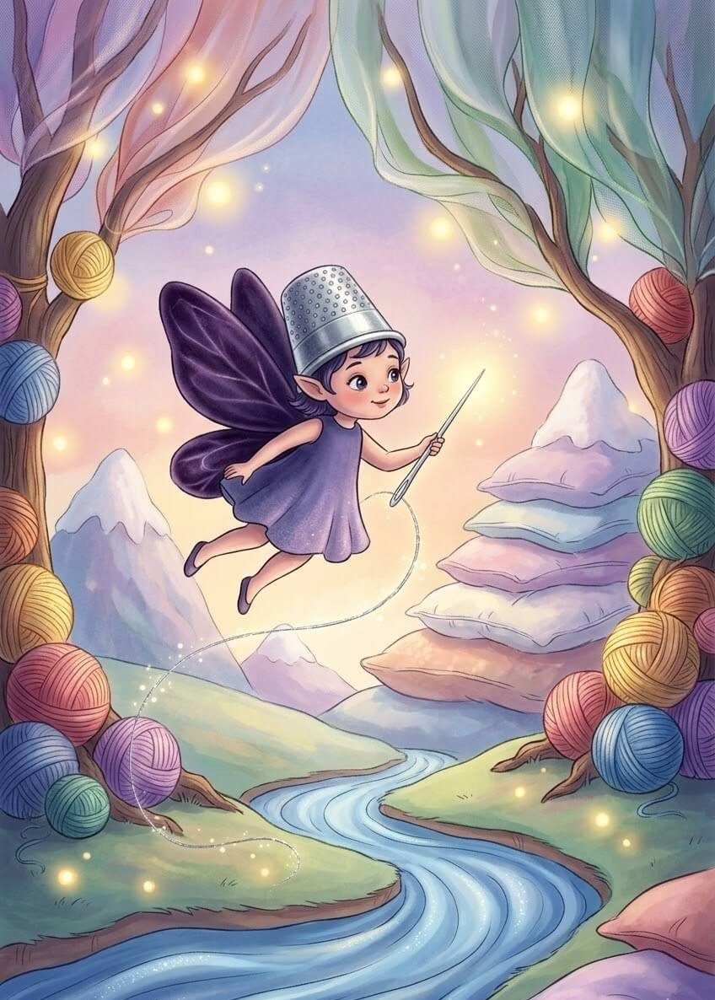
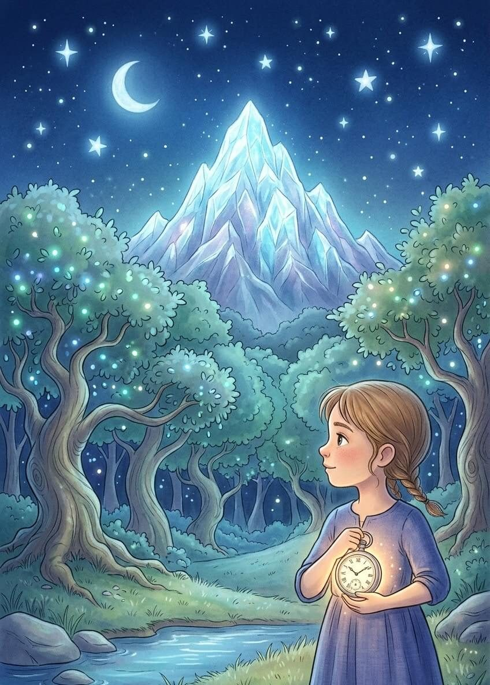
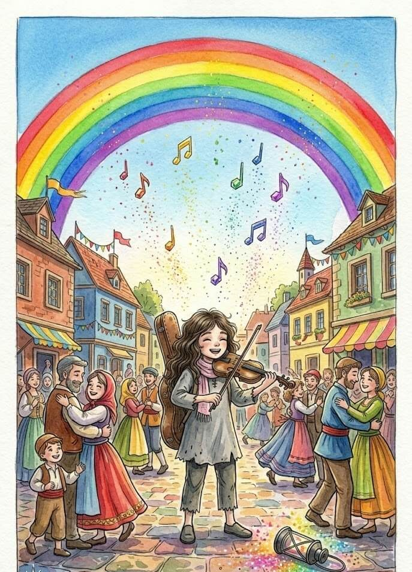
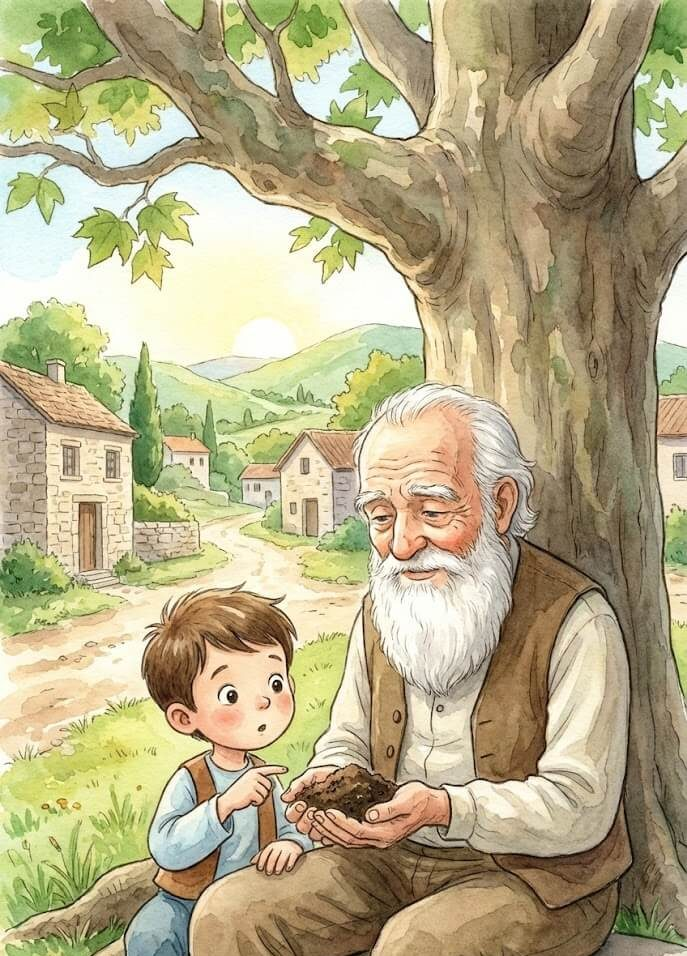
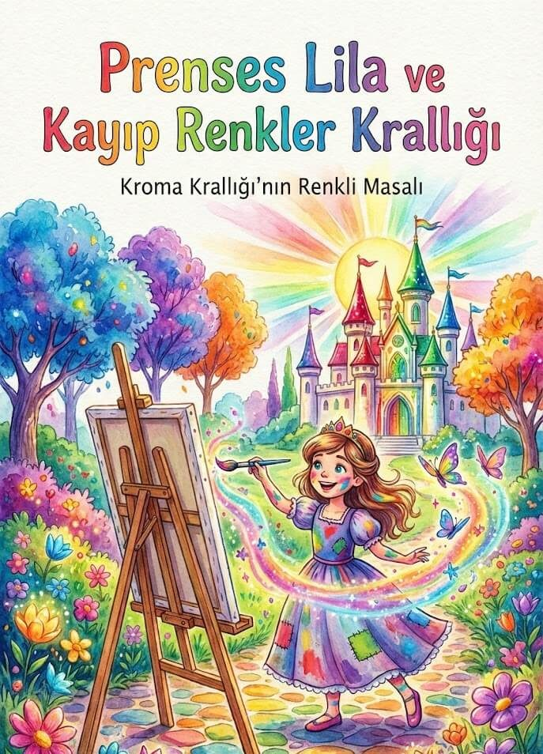
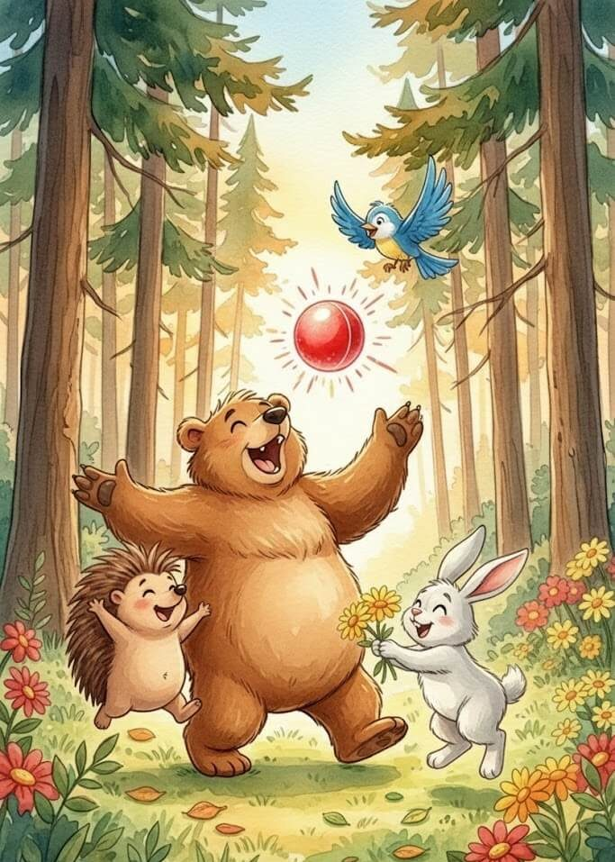
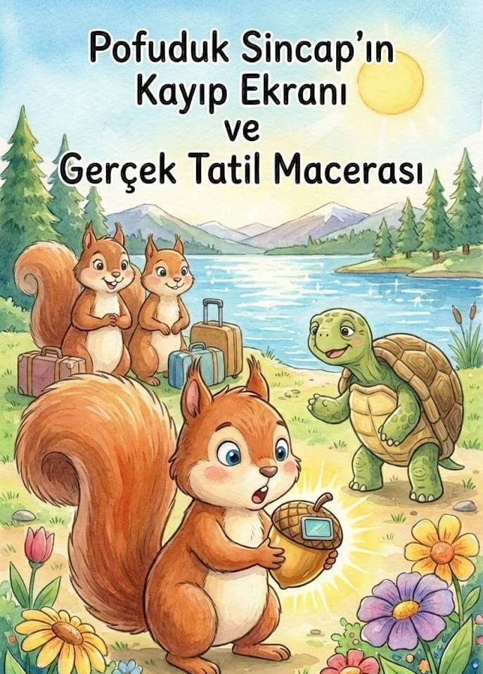
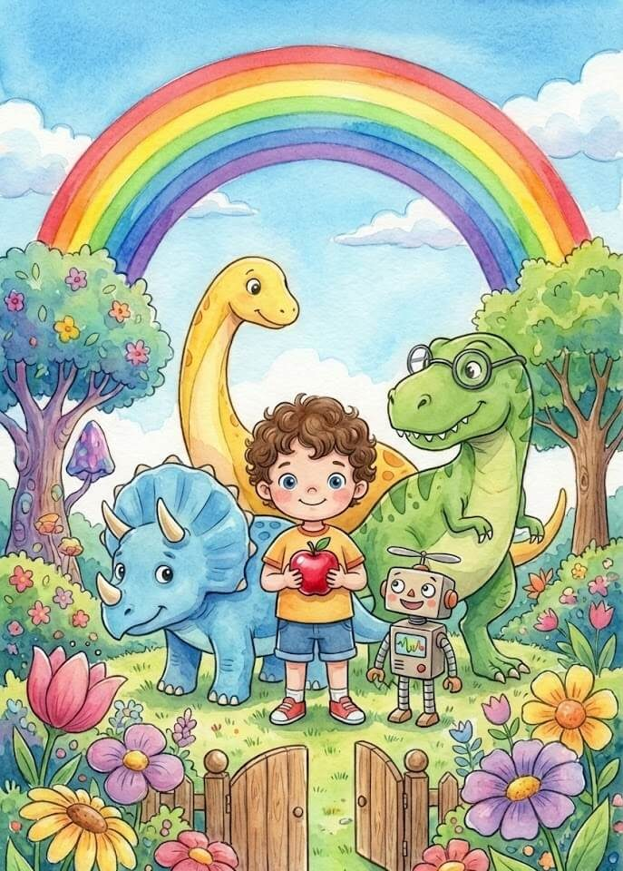

Doğa ve Çevre Masalları

Kadife Düğme ve Uyku Terzisi Peri Masalı
Bir varmış, bir yokmuş. Dünyanın en yumuşak bulutlarının hemen arkasında, teleskoplarla bile görünmeyen “Kumaşyaka” adında gizli bir diyar varmış. Bu ...

Rüzgârın Fısıldadığı Orman Masalı
Bir varmış, bir yokmuş. Zamanın, yıldızların parlaklığıyla ölçüldüğü ve bulutların pamuk şekerinden daha yumuşak olduğu çok uzak bir diyarda, Aethelgard ...

Elif ve Melodi Ormanı Masalı
Bir zamanlar, her şeyin bir sesi ve her sesin bir rengi olduğu Sesler Ülkesi adında büyüleyici bir yer vardı. Bu ...

Toprağın Altındaki Gizli Hazine Dini Masalı
Köyün en yaşlı çınarının altında, Kerem Dede ve torunu küçük Ömer oturuyordu. Ömer, sabahtan beri ektiği çiçek tohumlarının neden hemen ...

Prenses Lila ve Kayıp Renkler Krallığı Masalı
Evvel zaman içinde, gökkuşağının yeryüzüne değdiği yerde, Kroma adında büyüleyici bir krallık vardı. Kroma’da her şey kelimelerle anlatılamayacak kadar canlıydı; ...

Kırmızı Topun Sihri Masalı
Bir zamanlar, güneşin her sabah gülümsediği, çiçeklerin neşeyle dans ettiği Renkli Orman’da küçük bir kirpi yaşardı. Adı Pofuduk’tu. Pofuduk, diğer ...

Pofuduk Sincap’ın Kayıp Ekranı ve Gerçek Tatil Macerası
Bir varmış, bir yokmuş… Yemyeşil ağaçların gökyüzüne değdiği, neşeli kuş cıvıltılarının hiç eksik olmadığı “Fındık Kabuğu Ormanı”nda, Pofuduk adında, kuyruğu ...
Gümüş Yeleli Aslan ve Şarkı Söyleyen Eşek Fıfı
Bir varmış, bir yokmuş… Zamanın çok ötesinde, her ağacın farklı bir masal anlattığı “Fısıltı Ormanı” adında bir yer varmış. Bu ...

Mete’nin Sihirli Renkler ve Dinazorlar Bahçesi
Bir varmış, bir yokmuş… Şehirdeki kocaman ağaçlı bir sokağın en neşeli evinde, henüz üç yaşına yeni basmış, kıvırcık saçlı ve ...
Uykucu Leo’nun Aslan Masalı
Bir varmış, bir yokmuş. Çok uzaklarda değil, belki de hemen kalbimizin içinde, yemyeşil yaprakların olduğu kocaman bir orman varmış. Bu ...